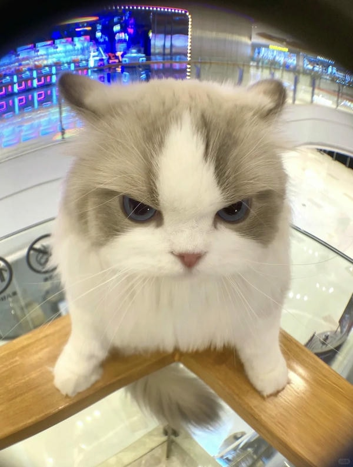

Đổi tài khoản
Đăng xuất
TRANG CHỦ
XU HƯỚNG
TẠO NGAY
HOT
CÀI ĐẶT
Khung hình bé,
thông điệp to
Tự tay thiết kế những khung hình độc đáo để mỗi thông điệp của bạn trở nên ý nghĩa và vang xa hơn

BẮT ĐẦU NÀO